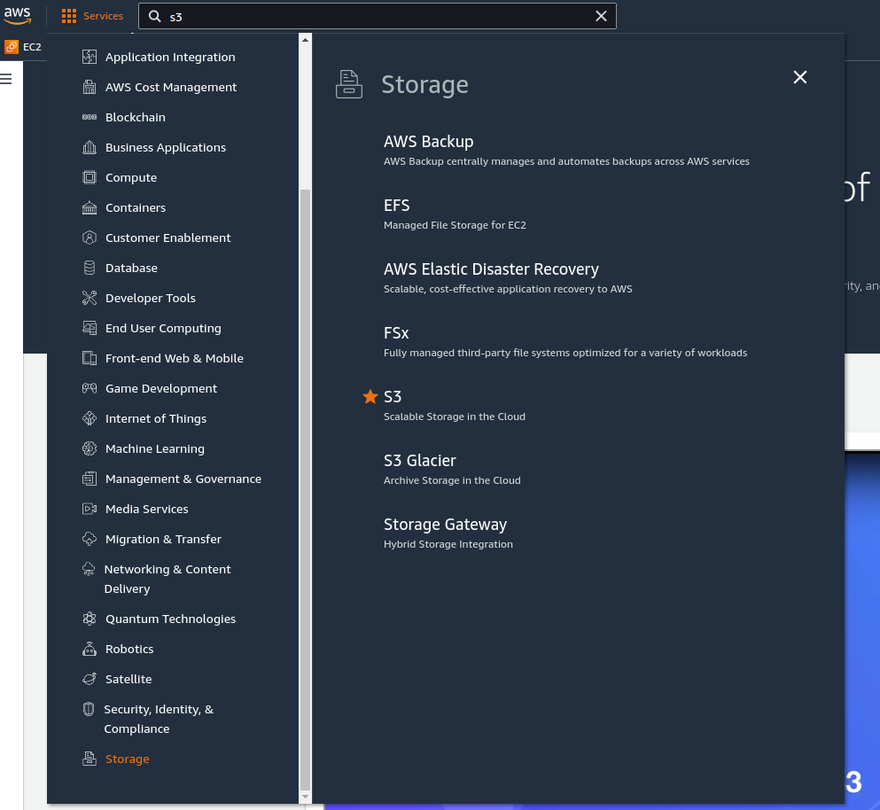
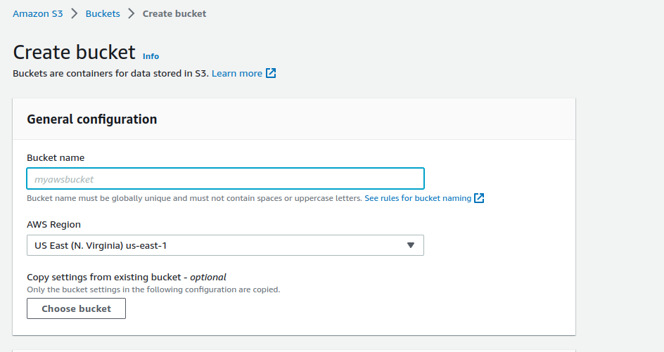
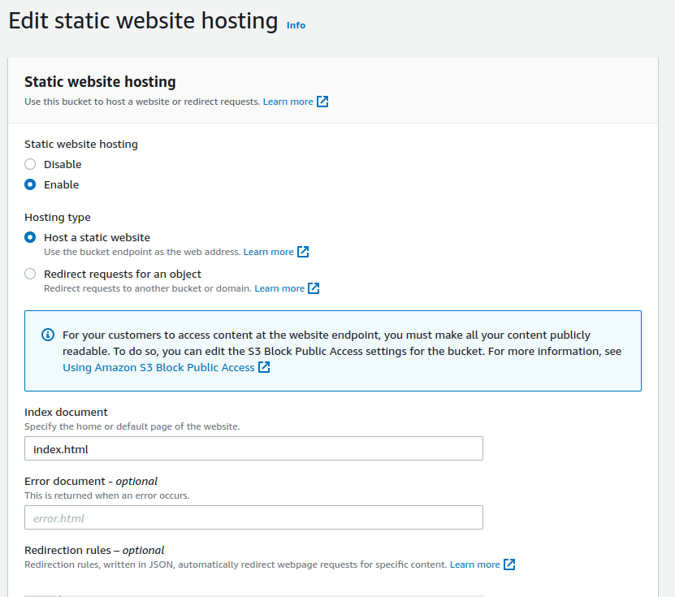
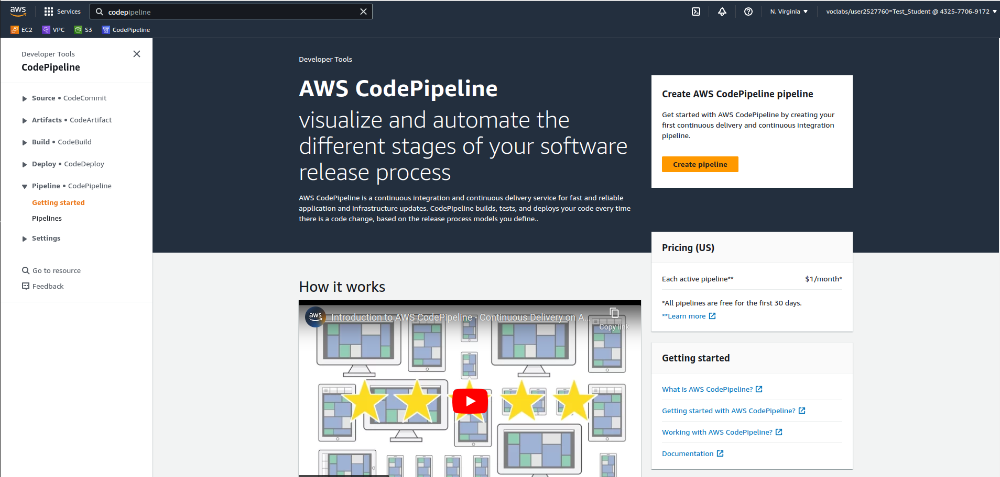
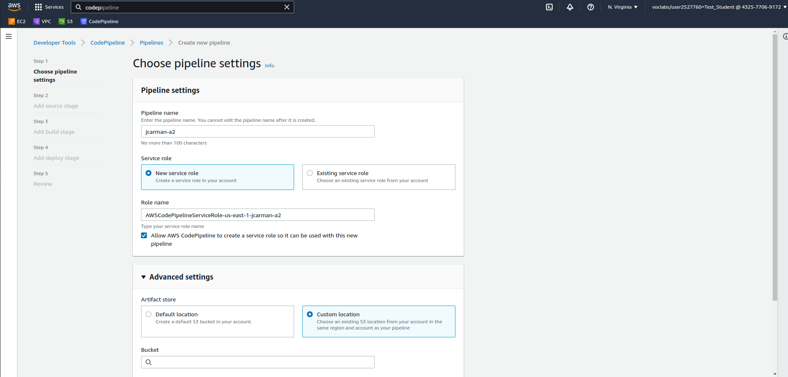
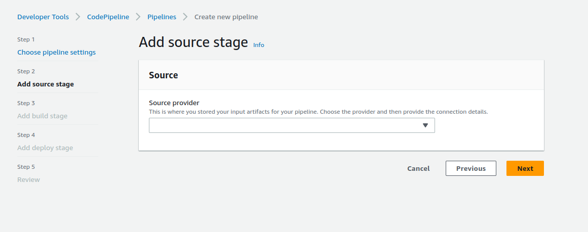

Assignment 2 - Fall 2023 - Due Friday, December 15th at 11:59pm
Under Development
Overview
In this assignment you are going to learn how to automate deploying a static website from GitHub to Amazon Web Services (AWS) using two services available in AWS: Amazon Simple Storage Service (S3) and AWS CodePipeline. Steps for configuring these services and integrating them with GitHub are provided below. You will then use this infrastructure to build and deploy a website according to the website specifications (see below).
Accepting the Assignment link to create your GitHub repository
Before you begin, Use the following link to set up your Assignment 2 repository. You wil be using this for Assignment 2.
Creating an S3 Bucket & Configuring it for Static Website Hosting
Launch your learner lab and login. Click on Services and navigate to Storage < S3 (see following screenshot). You may want to add this to your favourites.
You should see the following screen.
Create your S3 bucket with the following configuration
- Give it the name: usernamea2 (where username is your Centennial username, ie: jcarman1a2). Note: bucket names cannot contain spaces or upercase letters, and must be globally unique.
- Leave it in the default region.
- Make sure Block all public access is unchecked.
- Check Block public and cross-account access to bucket and objects through any public bucket or access point policies.
- Click Create bucket.
Editing your S3 bucket properties
- Click on the hyperlink to your bucket under Name.
- Click Properties.
- Scroll to Static website hosting, click Edit and enable it.
- Configure the following: 
- Don't forget to click Save changes.
Setting the permissions
- Copy the Amazon Resource Name (ARN) from your Bucket Properties tab (under Bucket overview).
- Scroll down to Bucket Policy, click Edit and enter the following:
{
"Version": "2012-10-17",
"Statement": [
{
"Sid": "PublicReadGetObject",
"Effect": "Allow",
"Principal": "*",
"Action": "s3:GetObject",
"Resource": "arn:aws:s3:::jcarman1a2/*"
}
]
}
Creating an AWS CodePipeline
Now that your S3 bucket is configured, you're going to use CodePipeline to implement a practice known as CI/CD - Coninuous Integration & Continuous Delivery/Deployment. CodePipeline will allow us to take the code you push to your GitHub repository and automatically clone it to the S3 bucket you configured. Your website will be deployed from there, with no server required. To access CodePipeline:
- Click on Services
- Click on Developer Tools
- Click on CodePipeline
You may want to add this to your favourites. You should see the following screen:
Click on Create pipeline. You should see the following screen:
Configure the following options:
- Pipeline name: youruserid-a2 (ie jcarman1-a2)
- Under Advanced settings Select Custom Location, click on the Bucket input box and select your s3 bucket.
Click next. You should see the following screen:
Under Source provider select GitHub (Version 1) from the drop down. You'll get a warning about Version 2 being recommended, however you cannot use Version 2 with the learner lab. Click Connect to GitHub.
In the Authorize application window that opens, click Authorize aws-codesuite at the bottom. Then Confirm on the next screen.
- Under Repository select CNET204/assignment-2-yourusername.
- Under Branch select Main.
- Under Change detection options make sure GitHub webhooks (recommended) is selected.
- Click Next.
- Under Add build stage click Skip build stage.
In Add deploy stage select Amazon S3 from the Deploy provider list, and select your bucket. Under S3 object key type in index.html, and click Next.
You should see a confirmation screen. Click to continue. You can now start adding code to your repostitory.
Creating a Website
Individually or (optionally) in a group of 2 (2 people would submit 1 website): You will complete a multi-page website using the tools and techniques we've covered in Labs 1-10. Choose one of the following topics and fulfill the required pages detailed below. All materials need to be submitted to your GitHub repository and all screenshots uploaded to the dropbox on e.centennial by the due date in order to recieve marks. If you're completing this as a group, only one group member needs to submit the project (and include both names).
Pick a topic from the list below (note the attached resources).
- Human Trafficking in Ontario
- Affordable Housing and Ending Homelessness
- Supporting Aboriginal people
- Helping women flee domestic violence
- Endangered Species in Ontario
- Climate Change initiatives in Ontario
- Any of the Poverty issues listed here
- Any of the labour related issues listed here
Your site needs to include the following pages:
- Home Page: Providing introductory content relating to your topic
- Five pages:
- Issue details: go into further detailed information about the issue by describing any of the following:
- The community
- The issue
- Some factors that contribute to the issue
- Reflection Practice: Your own personal reflections
- The power of social media and websites to promote awareness of the issue
- A Video describing your issue
- A second video discussing how technology has been used to address the inequality
- Issue details: go into further detailed information about the issue by describing any of the following:
- User Survey Form: Collecting opinions relating to the issue you've selected
- Resource Page: Listing hyperlinks to all websites you have consulted in gathering information for your project
Your website should contain the following features:
- Consistent for all pages:
- Navigation
- Fonts and Colours
- Size and Layout
- Each page should have
- a unique title
- a comment indicating your name(s) and student number. If you're working in a group, every page should contain both members name and student number.
- One linked style sheet to implement your CSS in order to ensure uniformity across all pages
Your website will be evaluated for Design, Content, stable transition between pages (navigation options don't move around), relevance (relevant information about your topic on all pages), accessibility, consistency of fonts and colours. Each page will be marked out of 5, with the individual breakdown as follows:
- Navigation options are consistent, and active class is properly utilized (2 marks)
- Page layout is consistent across your website (1 mark)
- Page colours are consistent across your website (1 mark)
- Content is relevant & each page contains a comment with your name(s) and student number(s) (1 mark)
Submission
Your project should be submitted to your GitHub repository, and screenshots uploaded to the assignment dropbox by the due date in order to recieve marks. As the due date is the final day of the course, any late submissions will recieve a grade of 0.